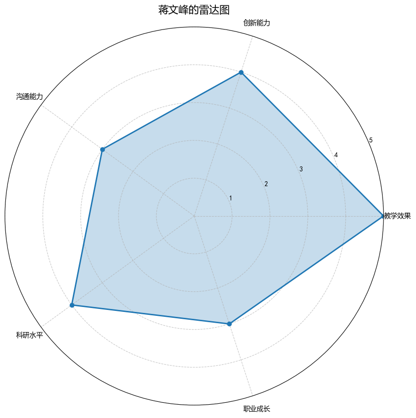
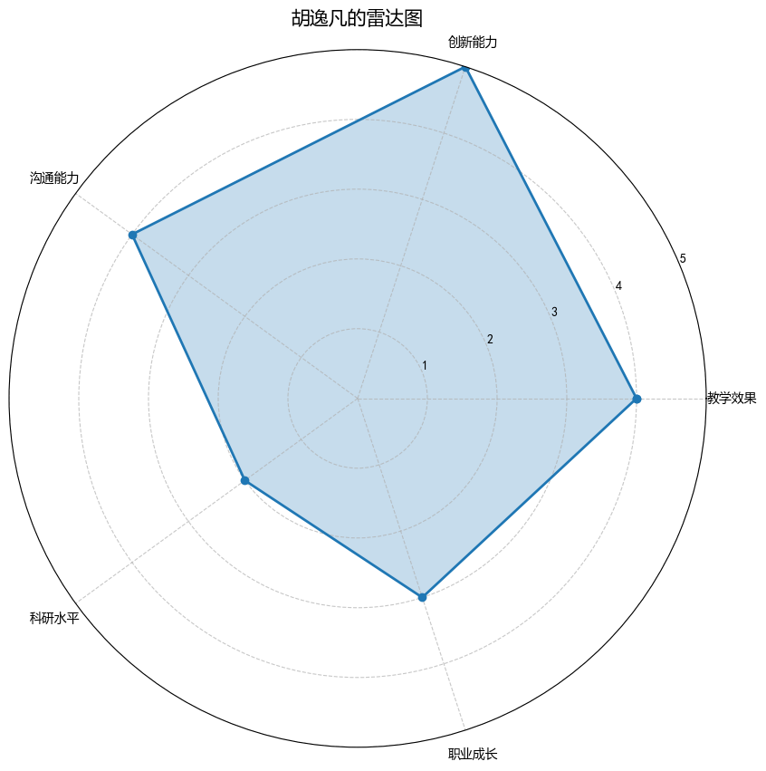
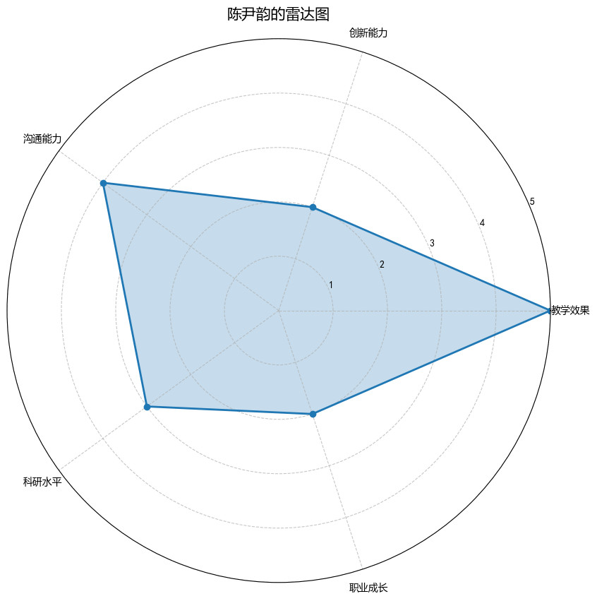

桑葚图分析
桑葚图（Sankey Diagram）是一种特殊类型的流程图，用于展示数据流动和转换过程。在本分析中，我们使用桑葚图来可视化学生对教师各项能力的评价分布。
通过桑葚图，我们可以清晰地看到：
- 教学能力：包括课程设计、教学方法、课堂组织等
- 专业素养：包括专业知识、学术水平、研究能力等
- 育人能力：包括学生指导、品德培养、价值观引导等
- 职业发展：包括教学研究、专业成长、职业规划等
- 社会贡献：包括学术影响、社会服务、行业贡献等
这种可视化方式帮助我们更好地理解学生对教师能力的整体评价模式，为教学改进提供数据支持。
个人雷达图分析
雷达图（Radar Chart）是一种多变量数据可视化工具，用于展示多个维度的数据。在本分析中，我们为每位同学创建了个性化的雷达图，展示其对教师各项能力的评价。
每个雷达图包含以下维度：
- 教学效果：包括知识传授、学习效果、课堂互动等
- 创新能力：包括教学方法创新、课程设计创新、科研创新等
- 沟通能力：包括表达清晰度、师生互动、答疑解惑等
- 科研水平：包括学术成果、研究能力、学术影响力等
- 职业成长：包括专业发展、教学改进、职业规划等
通过对比不同同学的雷达图，我们可以发现：
- 学生对教师能力的评价差异
- 教师在不同方面的优势与不足
- 需要重点改进的教学领域
这些分析结果将帮助教师更好地了解学生的期望，有针对性地改进教学方法。

郑洋莹

郑启晗

赵文彦

刘慎之

谢明姝
王灏然

吐玛尔
沈飞阳
森达尔

罗泰
罗钧芳

刘琰伟

刘柯

刘浩楠

李炘珂

李尚艾

蒋文峰
黄滢滢

胡逸凡
胡绪波

郭昱彤

付僇丁

邓茜

陈尹韵

阿依萨娜